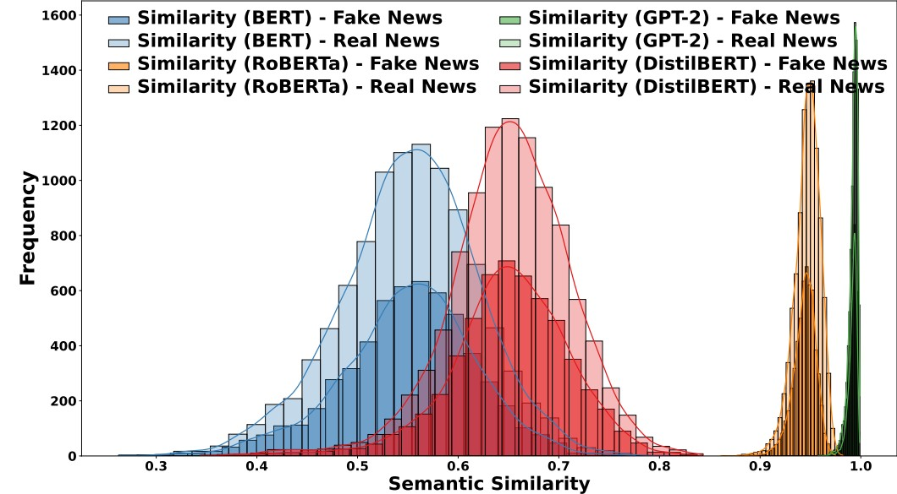
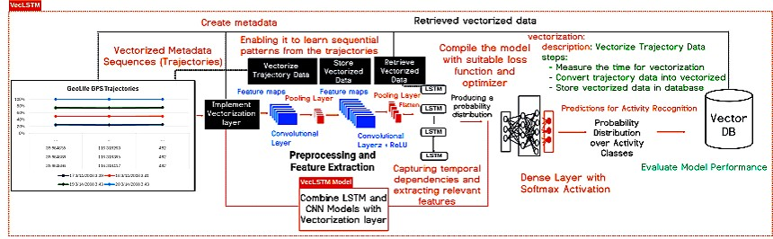
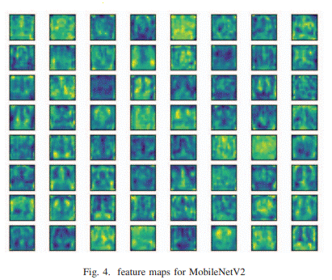
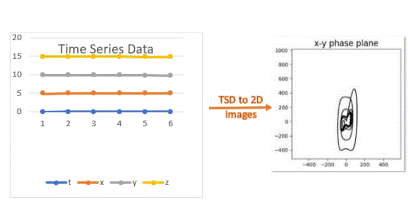

Solmaz Seyed Monir
I'm a Ph.D. student at the University of Washington, advised by Professor Dongfang Zhao. My research focuses on the intersection of database systems and data retrieval. I develop efficient indexing techniques to optimize data retrieval strategies in large-scale vector databases.
Research Areas: Database Systems, Large-Scale Data Management, Information Retrieval, Indexing Techniques
Current Research
I am currently researching advanced indexing and search techniques.

NexusIndex integrates multi-model embeddings, attention mechanisms, and a FAISSNexusIndex layer to support efficient fake news detection via dynamic vector indexing and real-time retrieval across textual and visual data.

VecLSTM: Trajectory Data Processing and Management for Activity Recognition through LSTM Vectorization and Database Integration
VecLSTM is a hybrid framework that enhances trajectory prediction by integrating dynamic vectorization techniques with a CNN–LSTM architecture. It efficiently processes trajectory data within a relational database environment, improving both accuracy and training time compared to traditional LSTM models.

This research introduces a caching subsystem leveraging in-memory vector databases to enhance the efficiency of image feature extraction. Using advanced models like MobileNetV3 and ResNet50, the framework integrates batch insertion and parallel processing to optimize computational performance.

This research focused on using deep neural networks and hierarchical clustering to predict chaotic transitions in natural convection systems, specifically in the Lorenz system.
Academic Service
Program Committee: The Web Conference (WWW) 2026 — Security & Privacy Track
Reviewer: WWW 2025 — Search & Retrieval-Augmented AI, IEEE eScience 2025, IPDPS 2025, ICDCS 2025, ACM CIKM 2024, Journal of Big Data (2024–2025)
Teaching Experience
Lecturer — North Seattle College
Department of Math & Science
September 2023 – Present, Seattle, WA
• CSC 110: Python Programming
• CSC 142: JAVA Computer Programming I (LEC)
Instructor Page
Lecturer — Central Washington University
Department of Computer Science
September 2022 – 2023, Ellensburg & Des Moines, WA
• CS380: Software Engineering (Java and Project Management)
• CS470: Operating Systems (Online – C, C++, and Linux)
Education
I received my second Master’s degree in Information Technology Infrastructure from Illinois Institute of Technology, Chicago, USA, with a 4.0 GPA. I also received a Master’s degree in Data Science, where my thesis focused on providing a model for optimizing customer value at the contact center. Additionally, I completed a Bachelor's degree in Computer Software Engineering.